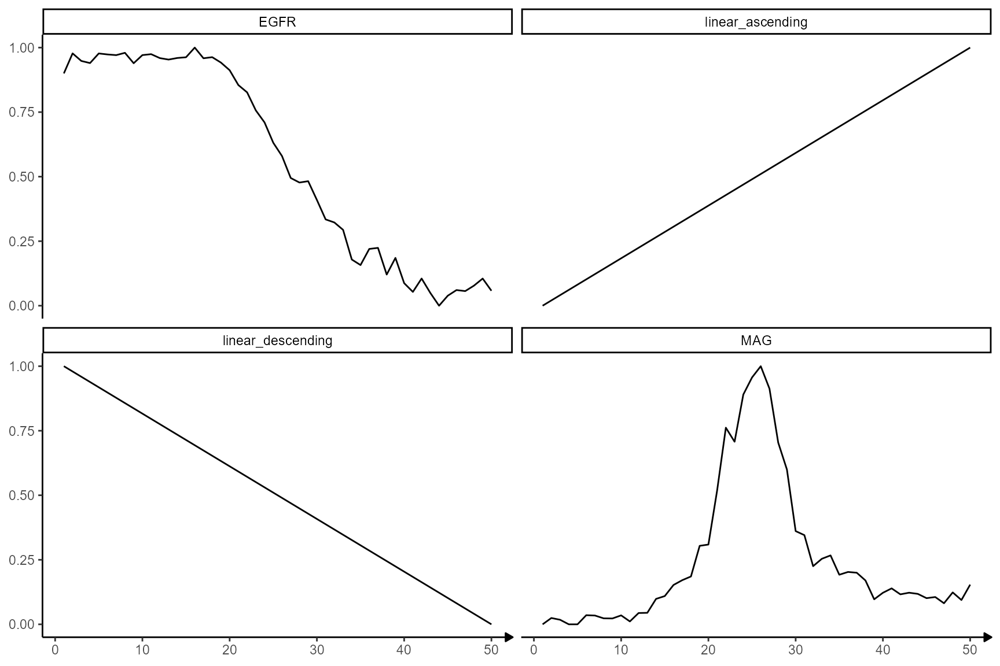

Model Fitting in Spatial Transcriptomics - Code & Concept
Jan Kueckelhaus
2022-08-20
cc-model-fitting-in-spatial-transcriptomic-studies.Rmd2. Introduction & Overview
Model fitting is the mathematical procedure used in SPATA2 to screen for genes with specific expression patterns. How the expression changes of genes are inferred is explained in the vignettes mentioned in 1. Prerequisites. This vignette explains step by step how the inferred expression changes are fitted to predefined models that reflect biologically relevant dynamics. To evaulate a gene-model-fit SPATA2 uses the concept of Pearson correlation and/or Area under the curve (AUC).
3. The data input
Both, spatial trajectory screening (STS) and image annotation screening (IAS), infer gene expression changes by binning barcode-spots and aligning the mean gene expression of each bin along the screening direction. As this results in basically identical data structures the subsequent model fitting works exactly the same for IAS and STS.
# spatial trajectory screening input
# displayed on the left below
traj_df_wide <-
getStsDf(
object = object_t269, # using object from previous tutorial
id = "horizontal_mid",
variables = "EGFR",
n_bins = 50,
format = "wide"
) %>%
select(
trajectory_order, # numeric variable indicating the order of the bins / direction
proj_length_binned, # the actual names of the bins
EGFR # the gene expression along the direction
)
# image annotation screening input
# displayed on the right below
ias_df_wide <-
getIasDf(
object = object_t313, # using object from previous tutorial
id = "necrotic_center",
distance = "2.25mm",
binwidth = "112.5um",
variables = "FN1",
summarize_by = c("bins_circle", "bins_angle")
) %>%
select(
bins_order, # numeric variable indicating the order of the bins / direction
bins_circle, # the actual names of the bins
FN1 # the gene expression along the direction
) %>%
filter(bins_circle != "Core")## # A tibble: 50 x 3
## trajectory_order proj_length_binned EGFR
## <int> <fct> <dbl>
## 1 1 (-0.888,25.1] 0.900
## 2 2 (25.1,49.9] 0.978
## 3 3 (49.9,74.7] 0.948
## 4 4 (74.7,99.5] 0.940
## 5 5 (99.5,124] 0.977
## 6 6 (124,149] 0.973
## 7 7 (149,174] 0.971
## 8 8 (174,199] 0.980
## 9 9 (199,223] 0.939
## 10 10 (223,248] 0.971
## # i 40 more rows## # A tibble: 21 x 3
## bins_order bins_circle FN1
## <dbl> <fct> <dbl>
## 1 1 Circle 1 0.931
## 2 2 Circle 2 1
## 3 3 Circle 3 0.929
## 4 4 Circle 4 0.915
## 5 5 Circle 5 0.886
## 6 6 Circle 6 0.812
## 7 7 Circle 7 0.769
## 8 8 Circle 8 0.723
## 9 9 Circle 9 0.651
## 10 10 Circle 10 0.592
## # i 11 more rowsAlthough the data.frames contain results of different methods and the names of the columns differ slightly the data structure is identical. The most important parts of both data.frames are the variable indicating the direction (trajectory_order, bins_order) and the gene expression variables that are named like the gene.
ggplot(data = traj_df_wide, mapping = aes(x = trajectory_order, y = EGFR)) +
geom_smooth(method = "loess", span = 0.25) +
geom_point() +
theme_bw() +
labs(subtitle = "STS - Sample 269")
ggplot(data = ias_df_wide, mapping = aes(x = bins_order, y = FN1)) +
geom_smooth(method = "loess", span = 0.25) +
geom_point() +
theme_bw() +
labs(subtitle = "IAS - Sample 313")4. The model input
In previous vignettes we describe how the expression changes from genes along a spatial trajectory or in relation to an image annotation are captured in numeric vectors (as plotted above). These vectors can be fitted against models.
4.1 Inbuilt models
SPATA2 provides the following predefined models.
# the number of bins (the resolution)
n_bins <- 50
# plot models
showModels(input = n_bins) +
theme(strip.background = element_blank()) +
labs(x = "Bins")The corresponding data can be created with the function
create_model_df().
# create data.frame with model variables
model_df <-
create_model_df(
input = 1:n_bins, # = 50
var_order = "trajectory_order",
model_subset = c("peak", "ascending", "descending"), # only use models that contain these catchphrases
model_remove = c("rev", "immediate", "two") # remove models that contain these catchphrases
)
# show results
model_df## # A tibble: 50 x 11
## trajectory_order one_peak sharp_peak early_peak late_peak late_ascending
## <int> <dbl> <dbl> <dbl> <dbl> <dbl>
## 1 1 0 0 0 0 0
## 2 2 0.00411 0 0.0170 0 0.00516
## 3 3 0.0164 0 0.0670 0 0.0104
## 4 4 0.0366 0 0.146 0 0.0158
## 5 5 0.0644 0 0.250 0 0.0213
## 6 6 0.0994 0 0.371 0 0.0269
## 7 7 0.141 0 0.5 0 0.0327
## 8 8 0.188 0 0.629 0 0.0386
## 9 9 0.241 0 0.75 0 0.0446
## 10 10 0.298 0 0.854 0 0.0507
## # i 40 more rows
## # i 5 more variables: linear_ascending <dbl>, abrupt_ascending <dbl>,
## # late_descending <dbl>, linear_descending <dbl>, abrupt_descending <dbl>Note that models are always provided with a range of values from 0 to 1.
4.2 User defined models
The set of models that is included in the screening process can be expanded with user defined models. User defined models can either be provided as numeric vectors or as formulas that create the numeric vectors.
4.2.1 Models as numeric vectors
For a model to be valid it must live up to two requirements:
The model must be of the same length as the variable that contains the inferred gene expression change. (Length of the vector must be equal to the number of bins.)
It’s values must range from 0 to 1.
The example below creates the model linear_ascending.
# create the linear_ascending model
linear_ascending_model <- 1:n_bins # n_bins = 50
linear_ascending_model <- scales::rescale(linear_ascending_model, to = c(0,1))
linear_ascending_model## [1] 0.00000000 0.02040816 0.04081633 0.06122449 0.08163265 0.10204082
## [7] 0.12244898 0.14285714 0.16326531 0.18367347 0.20408163 0.22448980
## [13] 0.24489796 0.26530612 0.28571429 0.30612245 0.32653061 0.34693878
## [19] 0.36734694 0.38775510 0.40816327 0.42857143 0.44897959 0.46938776
## [25] 0.48979592 0.51020408 0.53061224 0.55102041 0.57142857 0.59183673
## [31] 0.61224490 0.63265306 0.65306122 0.67346939 0.69387755 0.71428571
## [37] 0.73469388 0.75510204 0.77551020 0.79591837 0.81632653 0.83673469
## [43] 0.85714286 0.87755102 0.89795918 0.91836735 0.93877551 0.95918367
## [49] 0.97959184 1.00000000The validity of the model input can be checked by adding it to the
models plotted with showModels(). If the model is included
in the plot without any errors or warning messages the input is valid.
In general, models must be provided in a named list.
showModels(
input = n_bins,
model_subset = c("linear_descending", "my_linear_ascending_model"),
model_add = list(my_linear_ascending_model = linear_ascending_model)
)Providing models as numeric variables can be used to use specific gene expression changes as models.
traj_df_wide <-
getStsDf(
object = object_t269,
id = "horizontal_mid",
variables = c("EGFR", "MAG"),
n_bins = n_bins, # = 100
format = "wide"
)
# show results
traj_df_wide## # A tibble: 50 x 6
## trajectory_part proj_length_binned trajectory_order trajectory_part_order
## <chr> <fct> <int> <int>
## 1 Part 1 (-0.888,25.1] 1 1
## 2 Part 1 (25.1,49.9] 2 2
## 3 Part 1 (49.9,74.7] 3 3
## 4 Part 1 (74.7,99.5] 4 4
## 5 Part 1 (99.5,124] 5 5
## 6 Part 1 (124,149] 6 6
## 7 Part 1 (149,174] 7 7
## 8 Part 1 (174,199] 8 8
## 9 Part 1 (199,223] 9 9
## 10 Part 1 (223,248] 10 10
## # i 40 more rows
## # i 2 more variables: EGFR <dbl>, MAG <dbl>Selecting only the columns with the gene exprssion and converting the
data.frame to a list makes it a valid input for the argument
model_add.
showModels(
input = n_bins,
model_subset = c("linear", "EGFR", "MAG"),
model_add = as.list(traj_df_wide[,c("EGFR", "MAG")])
)
4.2.2 Models as formulas
If the number of bins changes, the length of the numeric vector must change, too. Therefore, instead of specifying the numeric vector over and over again a function can be written which is then added as a formula.
# write function that creates a linear_ascending model
create_linear_ascending_model <- function(x){
# take length of the input as length for the
# output vector
n_bins <- length(x)
out <- scales::rescale(x = 1:n_bins, to = c(0,1))
return(out)
}
# show results
create_linear_ascending_model(x = traj_df_wide[["trajectory_order"]])## [1] 0.00000000 0.02040816 0.04081633 0.06122449 0.08163265 0.10204082
## [7] 0.12244898 0.14285714 0.16326531 0.18367347 0.20408163 0.22448980
## [13] 0.24489796 0.26530612 0.28571429 0.30612245 0.32653061 0.34693878
## [19] 0.36734694 0.38775510 0.40816327 0.42857143 0.44897959 0.46938776
## [25] 0.48979592 0.51020408 0.53061224 0.55102041 0.57142857 0.59183673
## [31] 0.61224490 0.63265306 0.65306122 0.67346939 0.69387755 0.71428571
## [37] 0.73469388 0.75510204 0.77551020 0.79591837 0.81632653 0.83673469
## [43] 0.85714286 0.87755102 0.89795918 0.91836735 0.93877551 0.95918367
## [49] 0.97959184 1.00000000Again, the formula must be provided in a named list.
showModels(
input = n_bins,
model_subset = c("sinus", "EGFR", "my_linear_model"),
model_add = list(
my_linear_model = ~ create_linear_ascending_model(x = .x), # set to = .x
EGFR = traj_df_wide[["EGFR"]]
)
)5. Modelling expression changes
Evaluating a gene-model-fit works the same for both methods, STS and IAS. The rest of this vignette uses a spatial trajectory as an example.
We are using the same sample of the central nervous system malignancy that we used in the previous vignette which features three different, adjacent histological areas: Tumor, a transition zone as well as infiltrated cortex. The spatial trajectory stays the same, too.
object_t269 <- downloadSpataObject(sample_name = "269_T")
# creates trajectory manually
# alternatively you can draw it interactively with `createSpatialTrajectories()`
object_t269 <-
addSpatialTrajectory(
object = object_t269,
id = "horizontal_mid",
width = 100,
start = c(x = 100, y = 300),
end = c(x = 500, y = 300)
)We will use four genes as examples. Three of them follow an interesting expression change along the trajectory, namely EGFR, MAG and SNAP25. The last one, BCL9, does not.
genes_of_interest <- c("EGFR", "MAG", "SNAP25", "BCL9")
plotSurfaceComparison(
object = object_t269,
color_by = genes_of_interest
) +
ggpLayerTrajectories(object = object_t269, ids = "horizontal_mid", size = 1.5)
The inferred gene expression changes look like this.
plotTrajectoryLineplot(
object = object_t269,
id = "horizontal_mid",
variables = genes_of_interest,
n_bins = n_bins
) 
The inferred expression changes along spatial trajectories are
captured in a data.frame that can be obtained via
getStsDf(). Note that the inferred gene expression is
normalized to values from 0-1. 0 being the lowest expression and one the
highest within the scope of the trajectory.
traj_df_example <-
getStsDf(
object = object_t269,
id = "horizontal_mid",
variables = genes_of_interest,
n_bins = n_bins,
format = "wide"
)
# show results
traj_df_example## # A tibble: 50 x 8
## trajectory_part proj_length_binned trajectory_order trajectory_part_order
## <chr> <fct> <int> <int>
## 1 Part 1 (-0.888,25.1] 1 1
## 2 Part 1 (25.1,49.9] 2 2
## 3 Part 1 (49.9,74.7] 3 3
## 4 Part 1 (74.7,99.5] 4 4
## 5 Part 1 (99.5,124] 5 5
## 6 Part 1 (124,149] 6 6
## 7 Part 1 (149,174] 7 7
## 8 Part 1 (174,199] 8 8
## 9 Part 1 (199,223] 9 9
## 10 Part 1 (223,248] 10 10
## # i 40 more rows
## # i 4 more variables: EGFR <dbl>, MAG <dbl>, SNAP25 <dbl>, BCL9 <dbl>5.1 Evaluating fits with pearson correlation
One option to evaluate a model fit is using pearson correlation.
# combine gene and model variables to a new data.frame
combined_df <-
cbind(
traj_df_example[,c("proj_length_binned", "trajectory_order",genes_of_interest)],
model_df[,c("abrupt_descending", "abrupt_ascending", "sharp_peak")]
) %>%
as_tibble()
# show results
combined_df## # A tibble: 50 x 9
## proj_length_binned trajectory_order EGFR MAG SNAP25 BCL9
## <fct> <int> <dbl> <dbl> <dbl> <dbl>
## 1 (-0.888,25.1] 1 0.900 0 0.0140 0.183
## 2 (25.1,49.9] 2 0.978 0.0245 0.00475 0.0931
## 3 (49.9,74.7] 3 0.948 0.0177 0.00432 0.509
## 4 (74.7,99.5] 4 0.940 0 0.00448 0.528
## 5 (99.5,124] 5 0.977 0 0.00440 0.605
## 6 (124,149] 6 0.973 0.0353 0.00914 0.448
## 7 (149,174] 7 0.971 0.0340 0 0.173
## 8 (174,199] 8 0.980 0.0231 0 0.352
## 9 (199,223] 9 0.939 0.0227 0.00440 0.691
## 10 (223,248] 10 0.971 0.0347 0.00448 0.880
## # i 40 more rows
## # i 3 more variables: abrupt_descending <dbl>, abrupt_ascending <dbl>,
## # sharp_peak <dbl>Every observation/row in the data.frame combined_df
corresponds to one of the 50 bins to which the barcode-spots were
assigned. By comparing the course of EGFR along the trajectory
to the three models abrupt_descending,
abrupt_ascending and sharp_peak it becomes apparent
that that the expression change of EGFR resembles an abrupt
descending course.
ggplot(data = combined_df, mapping = aes(x = trajectory_order, y = EGFR)) +
geom_point() +
geom_smooth(method = "loess", span = 0.25) +
theme_bw() +
labs(subtitle = "a) EGFR - Course")
ggplot(data = combined_df, mapping = aes(x = trajectory_order, y= abrupt_descending)) +
geom_point() +
geom_smooth(method = "loess", span = 0.25) +
theme_bw() +
labs(subtitle = "b) Abrupt descending")
ggplot(data = combined_df, mapping = aes(x = trajectory_order, y = abrupt_ascending)) +
geom_point() +
geom_smooth(method = "loess", span = 0.25) +
theme_bw() +
labs(subtitle = "c) Abrupt ascending")
ggplot(data = combined_df, mapping = aes(x = trajectory_order, y = sharp_peak)) +
geom_point() +
geom_smooth(method = "loess", span = 0.25) +
theme_bw() +
labs(subtitle = "d) Sharp peak") Every point in the plot above corresponds to a bin of barcode-spots
along the trajectory (here 50 bins). It’s position on the x-axis
displays the bin’s positioning in relation to the spatial direction of
the trajectory. It’s position on the y-axis displays the mean-expression
of gene EGFR of all barcode-spots that fall into the bin.
Every point in the plot above corresponds to a bin of barcode-spots
along the trajectory (here 50 bins). It’s position on the x-axis
displays the bin’s positioning in relation to the spatial direction of
the trajectory. It’s position on the y-axis displays the mean-expression
of gene EGFR of all barcode-spots that fall into the bin.
Plotting the mean-expression of each bin against the trajectory order results in the inferred gene expression changes, which, in case of EGFR, is best characterized with the model abrupt_descending.
Plotting the mean-expression of each bin directly against the models results in the figures below and classifies the relationship between the expression change of a gene and the model.
# Obviously, plotting *EGFR* against *EGFR* results in perfect correlation as both variables are identical. It serves as an example for what a perfect gene-model fit would look like
ggplot(data = combined_df, mapping = aes(x = EGFR, y = EGFR)) +
geom_point() +
geom_smooth(method = "lm") +
theme_bw() +
labs(subtitle = "a) EGFR - EGFR")
ggplot(data = combined_df, mapping = aes(x = abrupt_descending, y = EGFR)) +
geom_point() +
geom_smooth(method = "lm") +
theme_bw() +
labs(subtitle = "b) EGFR - Abrupt descending")
ggplot(data = combined_df, mapping = aes(x = abrupt_ascending, y = EGFR)) +
geom_point() +
geom_smooth(method = "lm") +
theme_bw() +
labs(subtitle = "c) EGFR - Abrupt ascending")
ggplot(data = combined_df, mapping = aes(x = sharp_peak, y= EGFR)) +
geom_point() +
geom_smooth(method = "lm") +
theme_bw() +
labs(subtitle = "c) EGFR - Sharp peak")A positive slope of the fitted line indicates positive correlation values. A negative slope of the fitted line indicates negative correlation values. A slope that equals 0 indicates correlation values of 0 and thus bad fits.
breaks <- c(0,0.2,0.4,0.6,0.8,1)
# shift data.frame for plotting and subsequent evaluation
shifted_df <-
pivot_longer(
data = combined_df,
cols = any_of(c("abrupt_ascending", "abrupt_descending", "sharp_peak")),
names_to = "models",
values_to = "model_values"
) %>%
pivot_longer(
cols = any_of(genes_of_interest),
names_to = "genes",
values_to = "gene_values"
)
# show results
shifted_df## # A tibble: 600 x 6
## proj_length_binned trajectory_order models model_values genes gene_values
## <fct> <int> <chr> <dbl> <chr> <dbl>
## 1 (-0.888,25.1] 1 abrupt_as~ 0 EGFR 0.900
## 2 (-0.888,25.1] 1 abrupt_as~ 0 MAG 0
## 3 (-0.888,25.1] 1 abrupt_as~ 0 SNAP~ 0.0140
## 4 (-0.888,25.1] 1 abrupt_as~ 0 BCL9 0.183
## 5 (-0.888,25.1] 1 abrupt_de~ 1 EGFR 0.900
## 6 (-0.888,25.1] 1 abrupt_de~ 1 MAG 0
## 7 (-0.888,25.1] 1 abrupt_de~ 1 SNAP~ 0.0140
## 8 (-0.888,25.1] 1 abrupt_de~ 1 BCL9 0.183
## 9 (-0.888,25.1] 1 sharp_peak 0 EGFR 0.900
## 10 (-0.888,25.1] 1 sharp_peak 0 MAG 0
## # i 590 more rowsWhile variable trajectory_order contains the number of the bin, gene_values contains the mean expression value of the gene of each bin. The variable model_values contains the value a bin would need to have in order to fit into the course of the model. Plotting the relation between these gene-model-pairs and fitting a line to it gives an impression in how far the inferred expression changes resemble a model.
# plot gene-model-fits
ggplot(data = shifted_df, mapping = aes(x = model_values, y = gene_values)) +
geom_point() +
facet_grid( cols = vars(models), rows = vars(genes)) +
geom_smooth(method = "lm") +
scale_x_continuous(
breaks = breaks,
labels = as.character(breaks),
limits = c(0,1)
) +
scale_y_continuous(
breaks = breaks,
labels = as.character(breaks),
limits = c(0,1)
)+
theme_bw()Again, a positive slope of the fitted line indicates positive correlation values (good fits, e.g. EGFR - abrupt_descending, MAG - sharp_peak). A negative slope of the fitted line indicates negative correlation values (inverse fits e.g. EGFR - abrupt_ascending). A slope that equals 0 indicates correlation values of 0 and thus bad fits. E.g. the inferred expression change of BCL9 does not resemble any model.
# good fit results in positive correlation values
cor.test(x = combined_df[["EGFR"]], y = combined_df[["abrupt_descending"]])##
## Pearson's product-moment correlation
##
## data: combined_df[["EGFR"]] and combined_df[["abrupt_descending"]]
## t = 39.264, df = 48, p-value < 2.2e-16
## alternative hypothesis: true correlation is not equal to 0
## 95 percent confidence interval:
## 0.9732079 0.9913832
## sample estimates:
## cor
## 0.9847866
# inverse fit results in negative correlation values
cor.test(x = combined_df[["EGFR"]], y = combined_df[["abrupt_ascending"]])##
## Pearson's product-moment correlation
##
## data: combined_df[["EGFR"]] and combined_df[["abrupt_ascending"]]
## t = -32.492, df = 48, p-value < 2.2e-16
## alternative hypothesis: true correlation is not equal to 0
## 95 percent confidence interval:
## -0.9875288 -0.9613812
## sample estimates:
## cor
## -0.978014
# bad fit results in correlation values around 0
cor.test(x = combined_df[["BCL9"]], y = combined_df[["sharp_peak"]])##
## Pearson's product-moment correlation
##
## data: combined_df[["BCL9"]] and combined_df[["sharp_peak"]]
## t = -2.8295, df = 48, p-value = 0.006785
## alternative hypothesis: true correlation is not equal to 0
## 95 percent confidence interval:
## -0.5939340 -0.1114769
## sample estimates:
## cor
## -0.3780927The output of spatialTrajectoryScreening() and
imageAnnotationScreening() comes in form of a data.frame
where every observation/row corresponds to a gene-model-fit
evaulation.
eval_with_corr <- function(input_model, input_gene_expression){
res <- cor.test(x = input_model, y = input_gene_expression)
out <- str_c(round(res$estimate,2), round(res$p.value,2), sep = "_")
return(out)
}
corr_results <-
group_by(.data = shifted_df, models, genes) %>%
summarize(
res = eval_with_corr(input_model = model_values, input_gene_expression = gene_values)
) %>%
separate(col = res, into = c("corr", "pvalue"), sep = "_") %>%
select(genes, models, corr, pvalue) %>%
arrange(genes) %>%
group_by(genes) %>%
arrange(desc(corr), .by_group = TRUE)
corr_results## # A tibble: 12 x 4
## # Groups: genes [4]
## genes models corr pvalue
## <chr> <chr> <chr> <chr>
## 1 BCL9 abrupt_descending 0.41 0
## 2 BCL9 abrupt_ascending -0.44 0
## 3 BCL9 sharp_peak -0.38 0.01
## 4 EGFR abrupt_descending 0.98 0
## 5 EGFR sharp_peak 0.11 0.44
## 6 EGFR abrupt_ascending -0.98 0
## 7 MAG sharp_peak 0.97 0
## 8 MAG abrupt_ascending 0.15 0.31
## 9 MAG abrupt_descending -0.08 0.6
## 10 SNAP25 abrupt_ascending 0.97 0
## 11 SNAP25 abrupt_descending -0.98 0
## 12 SNAP25 sharp_peak -0.2 0.155.2 Evaluating fits via area under the curve (AUC)
Evaluating gene-model-fits via area under the curve (AUC) contains three steps.
- Calculating the residuals of each model fit
- Calculating the residuals area under the curve (RAUC)
- Normalizing RAUC to create the Residuals Area Over the Curve (RAOC)
For this part of the vignette we are using the gene MAG.
# create appropriate theme
theme_modelling <-
list(
theme_classic(),
theme(
axis.line.x = element_line(
arrow = arrow(length = unit(0.075, "inches"), type = "closed")
)
)
)
MAG_plot <-
ggplot(data = traj_df_example, mapping = aes(x = trajectory_order, y = MAG)) +
# use points to plot every bin
geom_point() +
# use lines to connect
geom_path() +
theme_modelling
peak_plot <-
ggplot(data = model_df, mapping = aes(x = trajectory_order, y = sharp_peak)) +
geom_point() +
geom_path() +
theme_modelling
# plot results
MAG_plot
peak_plot5.2.1 Calculating the residuals
The residuals are calculated by subtracting the inferred gene
expression from the model variable of interest and taking the absolute
value from that via base::abs().
# join both data.frames
# note that both data.frames contain the same number of rows
# as arguments `input` (create_model_df()) and `n_bins` (getStsDf())
# were specified with value 50
joined_df <-
left_join(
x = traj_df_example[, c("proj_length_binned", "trajectory_order", "MAG")],
y = model_df[, c("trajectory_order", "sharp_peak", "abrupt_descending")],
by = "trajectory_order"
)
# show results
joined_df## # A tibble: 50 x 5
## proj_length_binned trajectory_order MAG sharp_peak abrupt_descending
## <fct> <int> <dbl> <dbl> <dbl>
## 1 (-0.888,25.1] 1 0 0 1
## 2 (25.1,49.9] 2 0.0245 0 1
## 3 (49.9,74.7] 3 0.0177 0 1
## 4 (74.7,99.5] 4 0 0 1
## 5 (99.5,124] 5 0 0 1
## 6 (124,149] 6 0.0353 0 1
## 7 (149,174] 7 0.0340 0 1
## 8 (174,199] 8 0.0231 0 1
## 9 (199,223] 9 0.0227 0 1
## 10 (223,248] 10 0.0347 0 1
## # i 40 more rows
# compute residuals
residuals_df <-
mutate(
.data = joined_df,
# use base::abs() to ensure positive values
sharp_peak_res = abs(x = (sharp_peak - MAG)),
abrupt_descending_res = abs(x = (abrupt_descending - MAG))
)
# show results
residuals_df## # A tibble: 50 x 7
## proj_length_binned trajectory_order MAG sharp_peak abrupt_descending
## <fct> <int> <dbl> <dbl> <dbl>
## 1 (-0.888,25.1] 1 0 0 1
## 2 (25.1,49.9] 2 0.0245 0 1
## 3 (49.9,74.7] 3 0.0177 0 1
## 4 (74.7,99.5] 4 0 0 1
## 5 (99.5,124] 5 0 0 1
## 6 (124,149] 6 0.0353 0 1
## 7 (149,174] 7 0.0340 0 1
## 8 (174,199] 8 0.0231 0 1
## 9 (199,223] 9 0.0227 0 1
## 10 (223,248] 10 0.0347 0 1
## # i 40 more rows
## # i 2 more variables: sharp_peak_res <dbl>, abrupt_descending_res <dbl>Plotting the residuals along the trajectory’s course visualizes the quality of the fit. The variable trajectory_order refers to the ordering of the bins and indicates the direction of the trajectory.
linesize <- 1.25
# good fit
ggplot(data = residuals_df, mapping = aes(x = trajectory_order)) +
# course of MAG
geom_line(mapping = aes(y = MAG), color = "forestgreen", size = linesize) +
# course of the model
geom_line(mapping = aes(y = sharp_peak), color = "blue", size = linesize) +
# residuals
geom_area(mapping = aes(y = sharp_peak_res), fill = "red", alpha = 0.5) +
labs(y = NULL, subtitle = "a) Good Fit") +
theme_modelling
# bad fit fit
ggplot(data = residuals_df, mapping = aes(x = trajectory_order)) +
# course of MAG
geom_line(mapping = aes(y = MAG), color = "forestgreen", size = linesize) +
# course of the model
geom_line(mapping = aes(y = abrupt_descending), color = "blue", size = linesize) +
# residuals
geom_area(mapping = aes(y = abrupt_descending_res), fill = "red", alpha = 0.5) +
labs(y = NULL, subtitle = "b) Bad Fit") +
theme_modelling5.2.2 Calculating the residuals area under the curve (RAUC)
The AUC of the residuals is calculated with the R function
pracma::trapz() which implements trapezoidal
integration.
# good fit (low AUC)
auc_peak <- pracma::trapz(x = residuals_df[["trajectory_order"]], y = residuals_df[["sharp_peak_res"]])
auc_peak## [1] 4.711071
# bad fit (high AUC)
auc_desc <- pracma::trapz(x = residuals_df[["trajectory_order"]], y = residuals_df[["abrupt_descending_res"]])
auc_desc## [1] 23.96847Results of this concept can be visualized with the function
plotTrajectoryLineplotFitted() for every gene with every
model. Each of the three genes has at least one model that it fits well
to. The gene BCL9 has not.
models <- c("abrupt_descending", "sharp_peak", "abrupt_ascending")
plotTrajectoryLineplotFitted(
object = object_t269,
id = "horizontal_mid",
variable = "EGFR",
n_bins = 50,
model_subset = models,
nrow = 1
) +
legendNone() +
labs(subtitle = "a) EGFR")
plotTrajectoryLineplotFitted(
object = object_t269,
id = "horizontal_mid",
variable = "MAG",
n_bins = 50,
model_subset = models,
nrow = 1
) +
legendNone() +
labs(subtitle = "b) MAG")
plotTrajectoryLineplotFitted(
object = object_t269,
id = "horizontal_mid",
variable = "SNAP25",
n_bins = 50,
model_subset = models,
nrow = 1
) +
legendNone() +
labs(subtitle = "c) SNAP25")
plotTrajectoryLineplotFitted(
object = object_t269,
id = "horizontal_mid",
variable = "BCL9",
n_bins = 50,
model_subset = models,
nrow = 1
) +
legendNone() +
labs(subtitle = "d) BCL9")5.2.3 Normalizing RAUC into the Residuals Area Over the Curve (RAOC)
Drawback of AUC is that the evaluation score depends on the number of
bins. The maximum AUC if n_bins = 50 is 50 (50x1 = 50,
50x1 because the expression values will always range
from 0-1). Therefore, in case of n_bins = 50 an AUC of 24
is bad but if n_bins is set to 500 an AUC of 24 indicates
an excellent fit. Additionally, it is not intuitive that a low score
indicates a good fit and vice versa.
For that matter, we suggest to use the Residuals Area Over the Curve for evaluation. Two steps are needed to convert the RAUC to RAOC.
First, the AUC value is normalized against the number of bins such that it ranges from 0 to 1 (Normalization, nAUC). Second, the difference between 1 and nAUC is calculated.
nAUC_peak <- auc_peak / n_bins # n_bins = 50
RAOC_peak <- 1 - nAUC_peak
# good fit
RAOC_peak## [1] 0.9057786
nAUC_desc <- auc_desc / n_bins # n_bins = 50
RAOC_desc <- 1 - nAUC_desc
# bad fit
RAOC_desc## [1] 0.5206306This concept is visualized below. The bigger the area over the curve the better the fit.
normalized_residuals_df <-
mutate(
.data = residuals_df,
trajectory_order = trajectory_order/50,
sharp_peak_res_above = 1-(sharp_peak_res/50)
)
# plot with area under the curve
ggplot(data = normalized_residuals_df, mapping = aes(x = trajectory_order)) +
# course of MAG
geom_line(mapping = aes(y = MAG), color = "black", size = linesize) +
# course of the model
geom_line(mapping = aes(y = sharp_peak), color = "blue", size = linesize) +
# residuals
geom_area(mapping = aes(y = sharp_peak_res), fill = "tomato", alpha = 0.5) +
labs(y = NULL, subtitle = "a) Residuals Area Under the Curve") +
theme_modelling
# plot with area over the curve
ggplot(data = normalized_residuals_df, mapping = aes(x = trajectory_order)) +
# course of MAG
geom_line(mapping = aes(y = MAG), color = "black", size = linesize) +
# course of the model
geom_line(mapping = aes(y = sharp_peak), color = "blue", size = linesize) +
# residuals, but over the curve
geom_ribbon(
mapping = aes(
ymin = sharp_peak_res,
ymax = 1
), fill = "forestgreen", alpha = 0.5) +
labs(y = NULL, subtitle = "b) Residuals Area Over the Curve") +
theme_modelling
Note that the variable trajectory_order has been scaled to range from 0 - 1. The maximum area over the curve indicating a perfect fit becomes 1 (1x1) regardless of the number of bins chosen.